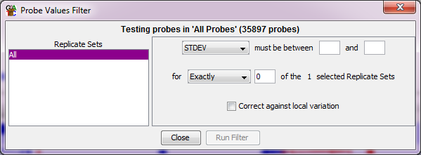

Individual Replicate Set Variance Filter
This filter allows you to filter probes based on a measure of variance in one or more
replicate sets.

Options
- You can select the measure of variance you want to use
- You can select an upper and a lower limit for the range of variances you want
to include. You only have to specify one of these values. If you leave the lower
value blank then anything under the upper cutoff will pass. If you leave the upper
value blank then anything above the lower cutoff will pass.
- You can choose in how many of your selected replicate sets a probe's variance needs to fall
within your defined range in order to be included in the final list.
- Finally, you have the option to correct for local variation. If this is selected
then the variance values will be adjusted to reflect the difference at this point from other
probes with similar average measures to the point being tested. This is the same correction which
is used in the variance plot so it's easy to see what this correction looks like in there